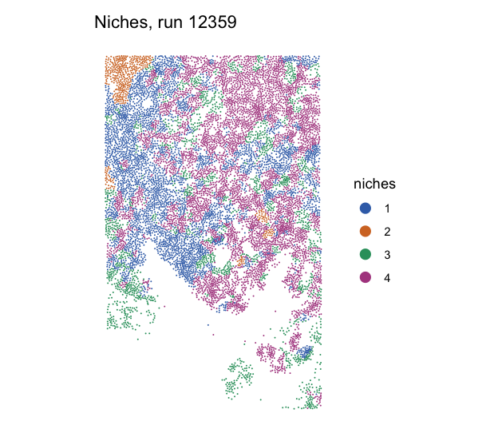

Bootcamp / Session 6 / 6.3
Session 6.3 · Homework
Read the Xenium report, then put the clusters back on the tissue
The Xenium run from 6.2, finished on Foundry. First you and an AI agent read its report with a critical eye. Then you load the Seurat object, draw the niches on the tissue, find where the blood vessels are, and test one of the classic ways spatial data misleads.
The data
Foundry run 12359 ran the Xenium Spatial Analysis Pipeline on 10x Genomics’ public human lung 2 field of view dataset, set up exactly as in 6.2. If your own run from 6.2 finished, its files are the same kind and should give the same numbers. You use its two outputs:
- HTML report (
Lung2fov.analysis_report.html, 5 MB): QC plots, the UMAP, clusters and niches on the tissue, and marker genes. - Seurat object (
Lung2fov.analysis.rds, 42 MB): counts, cell positions, clusters, and niches, ready to plot.
Set up
Download the two files
The course site holds copies of both files from run 12359, so this works whether or not your own run finished. They go in the same xenium folder as 6.2.
macOS:
mkdir -p ~/Documents/bootcamp/session6/xenium cd ~/Documents/bootcamp/session6/xenium curl -fsSL -o Lung2fov.analysis_report.html https://biocore.umassmed.edu/data/session6/Lung2fov.analysis_report.html curl -fsSL -o Lung2fov.analysis.rds https://biocore.umassmed.edu/data/session6/Lung2fov.analysis.rds
Windows PowerShell:
$d = Join-Path ([Environment]::GetFolderPath('MyDocuments')) 'bootcamp\session6\xenium'
New-Item -ItemType Directory -Force $d | Out-Null
cd $d
curl.exe -fsSL -o Lung2fov.analysis_report.html https://biocore.umassmed.edu/data/session6/Lung2fov.analysis_report.html
curl.exe -fsSL -o Lung2fov.analysis.rds https://biocore.umassmed.edu/data/session6/Lung2fov.analysis.rds
Then in VS Code open the xenium folder, as in 6.2. Keep the agent in ask-first mode.
Make sure R and Seurat 5 are installed
You set these up for 5.3. This object needs Seurat 5 or newer.
Check whether R is installed on this computer and which version, and which version of the Seurat package is installed. If Seurat is missing or older than version 5, tell me exactly what to install and how for my operating system, and run an install only after I say yes.
Checkpoint R 4.3 or newer, and packageVersion("Seurat") is 5.0 or higher.
Part 1: Read the report
Double-click Lung2fov.analysis_report.html to open it in your browser. Click through the QC and Analysis tabs for a few minutes before you ask the agent anything.
1. Read it yourself first
Find the spatial plot of niches. Can you see a region where one niche dominates? Find the spatial plot of clusters. Is it readable with 28 colors?
2. Read the text, not just the plots
Lung2fov.analysis_report.html in this folder is an R Markdown report from a Xenium spatial analysis, about 5 MB, mostly embedded images. Do not read the whole file. Write a small script that prints only its headings and paragraphs of text, without the images. Then tell me: does any text in the report describe a different technology than Xenium? Quote it, and say whether it applies to this data.
Checkpoint The opening section talks about empty droplets, Cell Ranger, Drop-Seq and the emptyDrops algorithm. None of that applies to Xenium, which has no droplets: cells come from segmenting an image. The text was carried over from a single-cell report. The plots are what this run made; the boilerplate is not.
Part 2: The object and its QC
3. Look inside the Seurat object
Lung2fov.analysis.rds in this folder is a Seurat object from a 10x Xenium run. Write an R script that loads it with Seurat and tells me: how many cells and genes, which assays, which dimensional reductions and images, the metadata column names, the median transcripts and genes per cell, and how many cells are in each of seurat_clusters and in each of niches. Never print the count matrix itself.
Checkpoint 11,486 cells and 289 genes. Assays Xenium, BlankCodeword, ControlCodeword, ControlProbe, SCT, and niche; reductions pca and umap; one image, fov. A median of 56 transcripts and 25 genes per cell. 28 clusters numbered 0 to 27, and 4 niches of 3,883, 440, 1,774, and 5,389 cells.
4. Which resolution, and where did 412 cells go?
The metadata has columns SCT_snn_res.0.1 to SCT_snn_res.2 and a column seurat_clusters. Find which resolution seurat_clusters matches. Then: the 10x bundle had 11,898 cells and this object has 11,486. The pipeline kept cells between the 1st and 99th percentiles of nCount_Xenium and nFeature_Xenium. Is that enough to explain the difference? Say what you can prove from this object and what you cannot.
Checkpoint seurat_clusters is identical to SCT_snn_res.1.8. 412 cells were removed, about 3.5%, which fits trimming both tails of two measures. The object holds only the kept cells, so it cannot show you which ones went.
5. How noisy is the decoding?
This object has assays for negative control probes (ControlProbe), negative control codewords (ControlCodeword), and blank codewords (BlankCodeword). Add up their counts across all cells and compare with the total gene counts in the Xenium assay. What fraction of calls are controls, and what does that say about how many gene calls are false?
Checkpoint 246 control counts (191 blank, 38 control codeword, 17 control probe) against 693,521 gene counts: about 0.035%, roughly 1 in 2,800. Decoding noise is not this run’s problem.
Part 3: Back on the tissue
6. Draw the niches
Plot the cells at their positions on the tissue, colored by niches, using Seurat's ImageDimPlot on the fov image with a light background, and save it as spatial_niches.png. Then make a table of how many cells from each cluster fall in each niche, and tell me which cluster makes up most of the smallest niche.
Checkpoint Niche 2, the smallest at 440 cells, is mostly cluster 17: 286 of its cells. On the map it fills one corner of the tissue.
Compare What your plot should look like

7. Where are the blood vessels?
VWF is a classic marker of blood vessel endothelium. Tell me how many cells have VWF counts above zero, which three clusters have the highest mean VWF, and the fraction of VWF positive cells in each niche. Then plot VWF on the tissue with ImageFeaturePlot. Which niche looks like it holds the vessels, and which other genes on the panel would you check to be sure?
Checkpoint 495 cells are VWF positive, highest in clusters 15, 26, and 25. 11.6% of niche 3 is VWF positive, against 2.4 to 3.9% in the other niches. Niche 3 also carries the stromal genes PDGFRA and PDGFRB.
8. Stretch: does segmentation spill over?
EPCAM marks epithelial cells. Tell me the fraction of EPCAM positive cells in each niche, including the vessel and stroma niche. Then count cells with CD68 above zero, a macrophage marker, and how many of those are also EPCAM positive. Give me two explanations for what you find, one biological and one technical, and say what in the raw Xenium output, such as the transcripts file or the cell boundaries, would tell them apart.
Checkpoint EPCAM is detected in 72 to 80% of cells in every niche, even niche 3. Of 654 CD68 positive cells, 525 also have EPCAM. A macrophage does not make epithelial transcripts: the likely cause is segmentation boundaries picking up transcripts from neighboring epithelial cells, as described in 6.1.
- Which parts of the report would you trust as they are, and which would you check before quoting?
- What does niche 3 tell you that its clusters alone did not?
- If you were naming cell types in this dataset, how would the EPCAM result change the way you use marker genes?
- Where did you have to correct the agent, or check its numbers yourself?
Links
After the session
Two minutes of feedback, so the next session is pitched better. It also records your attendance, so fill it in whether you were in the room, on Zoom, or catching up on the recording.